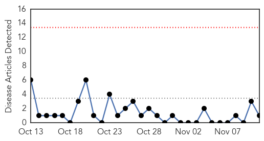

Influenza
30-Day Web Trend
0 alerts, 0 warnings

30-Day Twitter Trend
2 alerts, 0 warnings
Article Locations

Article Confidences

Top Articles:
- 0.999
- Why a Flu Propaganda Machine Exists in the US and Canada
- 0.998
- Flu claims life of Stanislaus County infant
- 0.930
- Sanofi unveils its work on improving flu vaccines
- 0.909
- Articles, event listings and opinion
- 0.847
- Today's stories from newspapers in Muskoka Region
- 0.843
- Today's stories from newspapers in Parry Sound
- 0.800
- Today's stories from newspapers in Ottawa
- 0.800
- Today's stories from newspapers in Ottawa
- 0.751
- November 11, 2015 Archives
- 0.751
- November 10, 2015 Archives
- 0.751
- November 10, 2015 Archives
- 0.727
- New flu protections following record numbers
- 0.712
- WV officials lift bans on poultry exhibits; warnings continue
- 0.632
- Baby vaccinations remain a cause for concern
- 0.576
- Boots scraps nasal spray ad campaign
Top Tweets:
- 0.515
- RT: @GSK_AU quadrivalent influenza vaccine Fluarix Tetra announced for NationalImmunisationProgram 2016 vaccina…
MERS
30-Day Web Trend
0 alerts, 0 warnings

30-Day Twitter Trend
2 alerts, 2 warnings
Article Locations
Article Confidences

Top Articles:
Top Tweets:
-
No tweets found for Nov 11, 2015